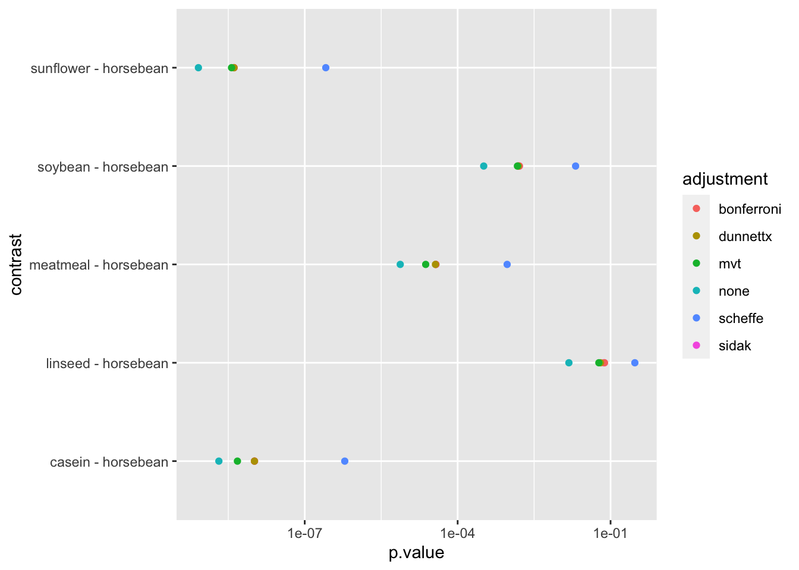
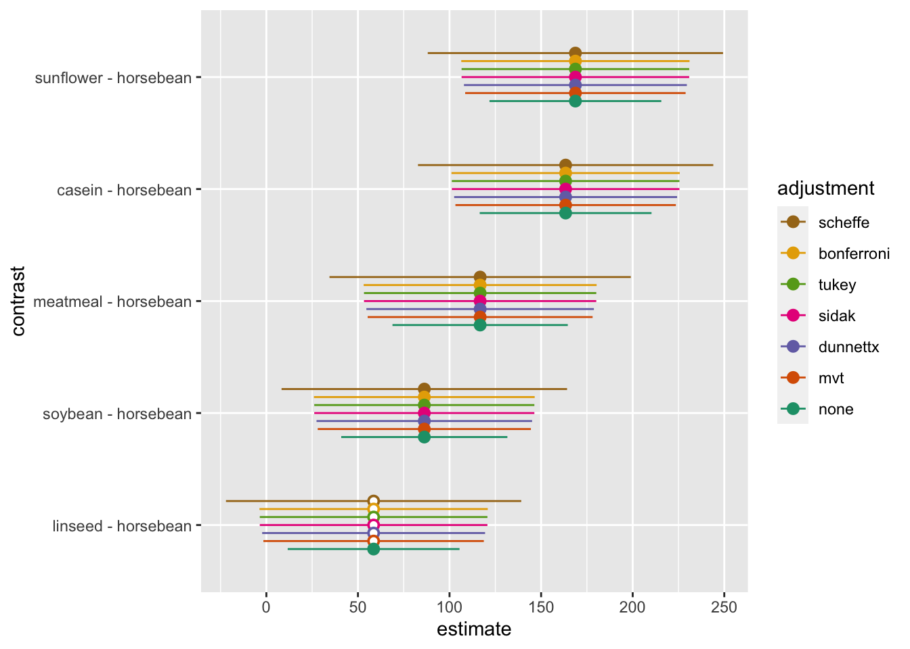

![]()
Code
library(ggstance)
library(ggbeeswarm)
library(emmeans)
library(afex)
library(brms)
library(tidyverse)2024-03-01
A while ago I saw something on social media that upset me. (No surprises there.) In response, I probably said things that upset other people. As result of all that upset, in this blog post I address the following question: Are there everyday run-of-the-mill topics in which we can easily show that bayes—using the rules of probability to integrate information in data and elsewhere to produce more accurate information—reigns supreme over clever ad hoc devices for controlling error rates over hypotheticals?
I’m not going to say anything new here. The basic ideas are very well known and communicated e.g. in [baseball example james stein] and [gelman multiple comparisons]. What I am going to try is to examine how well those true and tested ideas can apply in typical experimental psychology situations.
Let us consider an everyday ANOVA application: You took some chickens and randomly allocated them to different diets at birth.1 After a couple of weeks, you measured each chicken’s weight to determine which kind of diet leads to the fattest chickens. I show these data in Figure 1. Sounds like a no-brainer for an ANOVA: Is there a difference in the group means?
1 See ?chickwts: “Newly hatched chicks were randomly allocated into six groups, and each group was given a different feed supplement. Their weights in grams after six weeks are given along with feed types.” This is not a typical psychology study but the data was easier for me to find than a multiple-groups humans dataset. Let us say that the ideas discussed here generalize directly from chickens to humans.
A clean experiment typically produces perhaps two to four means of assumed gaussian distributions. For such clean designs, statistical details might not matter because analysts can produce plots that visualize the means and differneces therein–with appropriate representations for uncertainty–and numbers end up being less important. Since in debates about the usefulness of bayes, one can typically fall back to this “whatever 2x2 design yolo!” argument, I want to provide some kind of an illustration of how bayes reigns supreme even in those simple situations.
The issue essentially boils down to a topic typically discussed under the umbrella term of multiple comparisons and how one should adjust for it assuming different kinds of scenarios in which other hypothetical experiments might be run.
To get started
fit <- aov_ez(
dv = "weight",
between = "feed",
id = "rowid",
data = dat
)
x <- tibble(
adjustment = c("tukey", "scheffe", "sidak", "bonferroni", "dunnettx", "mvt", "none")
) |>
mutate(
contrast = map(
adjustment,
~emmeans(fit, ~feed) |>
contrast("trt.vs.ctrl", adjust = .x) |>
summary(infer = TRUE)
)
)
x |>
slice(-1) |> # This is illegal outside pairwise comparisons
unnest(contrast) |>
ggplot(aes(p.value, contrast, col = adjustment)) +
scale_x_log10() +
geom_point()
x |>
unnest(contrast) |>
mutate(
contrast = fct_reorder(contrast, estimate),
adjustment = fct_reorder(adjustment, upper.CL-lower.CL)
) |>
ggplot(aes(estimate, contrast, col = adjustment, shape = p.value < 0.05)) +
scale_color_brewer(palette = "Dark2") +
scale_shape_manual(values = c(21, 19)) +
guides(
shape = "none",
color = guide_legend(reverse = TRUE)
) +
geom_pointrangeh(
aes(xmin = lower.CL, xmax = upper.CL),
fill = "white",
position = position_dodgev(.5)
)
library(tidybayes)
fit %>%
spread_draws(r_feed[condition,]) %>%
compare_levels(r_feed, by = condition, comparison = emmeans_comparison("trt.vs.ctrl")) %>%
mean_qi()
ungroup() %>%
mutate(condition = reorder(condition, r_feed)) %>%
ggplot(aes(y = condition, x = r_feed)) +
stat_halfeye() +
geom_vline(xintercept = 0, linetype = "dashed") @online{vuorre2024,
author = {Vuorre, Matti},
title = {Help Bayes Help You: {The} Case of Multiple Contrasts},
date = {2024-03-01},
url = {https://vuorre.com/posts/multiple-comparisons-why-probability/},
langid = {en}
}